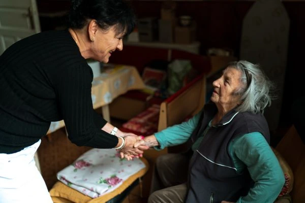
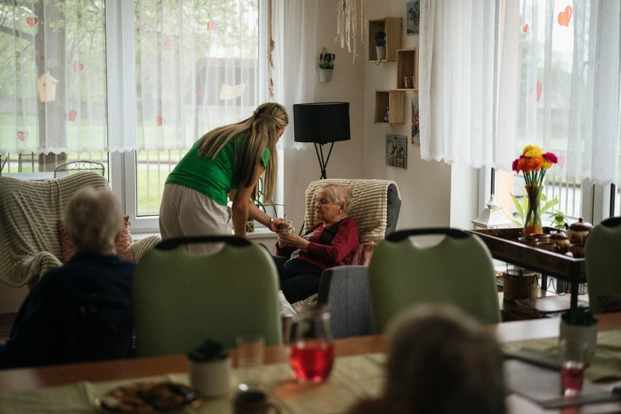
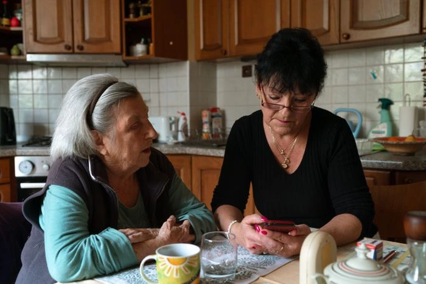
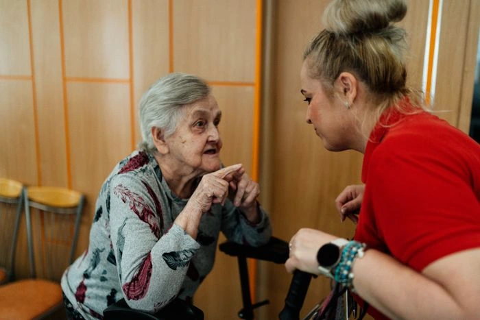

Five signs a fall risk needs a home physiotherapist, not just caution
How to tell the difference between normal slowing down and a mobility issue worth treating at home.
Notes From Our Team
Practical guidance and honest reflections from our nurses, home care coordinators and therapists.
-compressed.webp)
Most families wait for a health scare before discussing what their parent actually wants from care at home. Our geriatric physician breaks down the questions worth asking early, and how to raise them without it feeling like a confrontation.
Read Full ArticleHow to tell the difference between normal slowing down and a mobility issue worth treating at home.

A home care coordinator's playbook for staying involved when you can't be there every week.

What our home visit coordinators reach for when energy or focus is low that day.

Common misconceptions about early-stage memory conditions, from people who see it daily.
What to actually check for before your parent leaves the hospital for home care.

What to ask beyond experience — the questions that reveal how someone actually treats people.